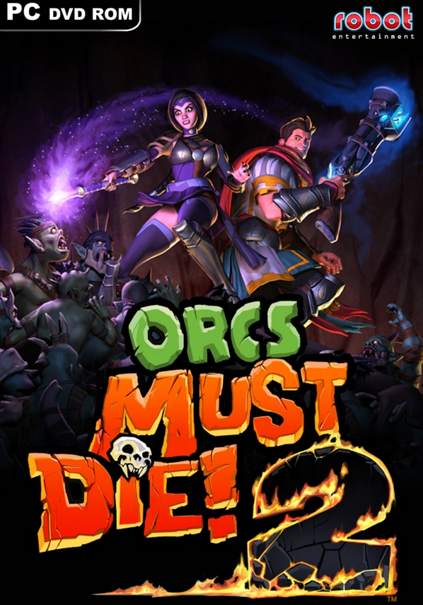
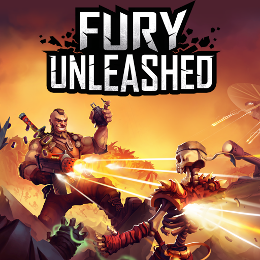

Каждому игроку, который решил купить ключ
Orcs Must Die! 2, снова предстоит погрузиться в самый эпицентр войны
между орками и людьми. Вы снова возьмете в руку свой боевой
посох и докажите, что истинного мага не победить ни одной хитроумной волшебнице.
Цена:89 рублей
Отправляйтесь в скандинавское царство
Отомстив богам Олимпа, Кратос живет
в царстве скандинавских божеств и чудовищ. В этом
суровом беспощадном мире он должен не только
самостоятельно бороться за выживание... но и научить этому сына.
Цена:2000 рублей

Fury Unleashed создан в сочетании вдохновения от современных
платформеров в стиле roguelite (Dead Cells и Rogue Legacy)
с ностальгическими воспоминаниями о платформерах старой школы (Contra и Metal Slug).